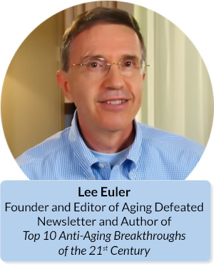
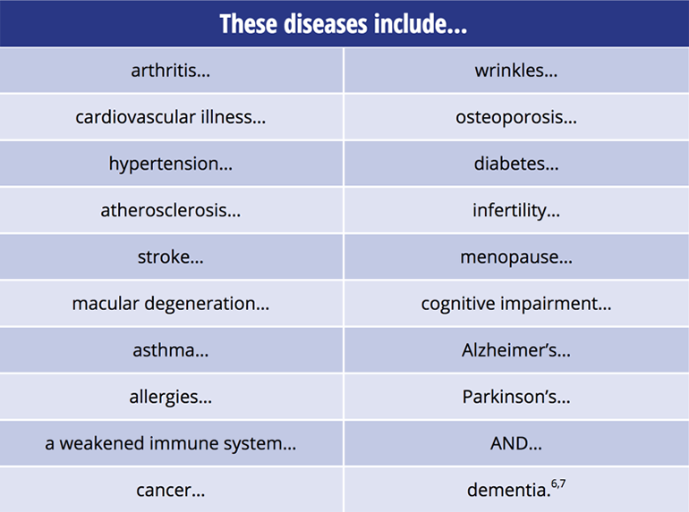
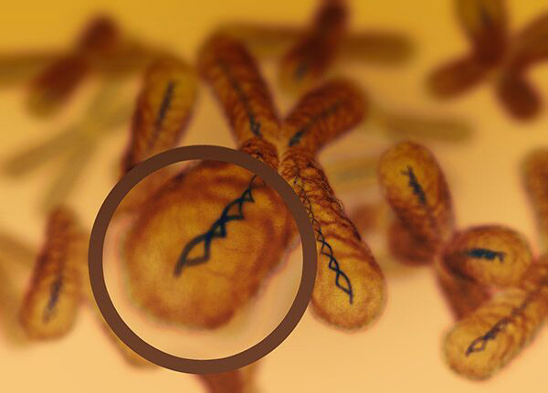
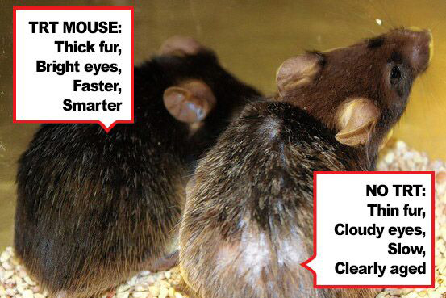
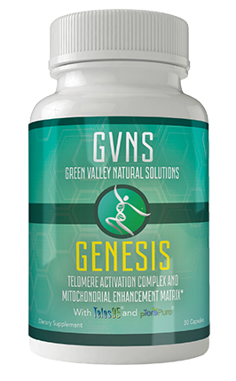
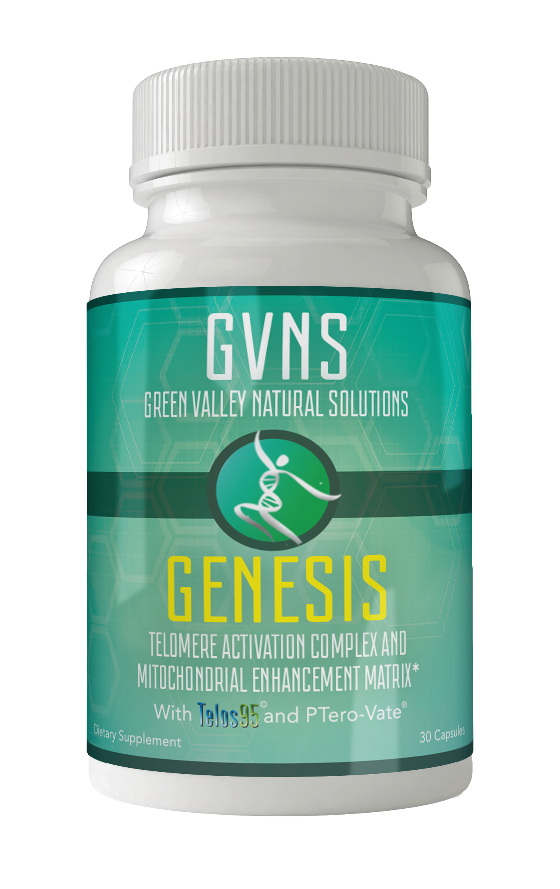
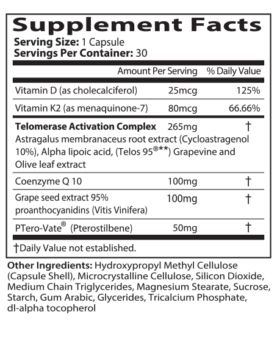
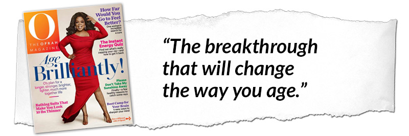
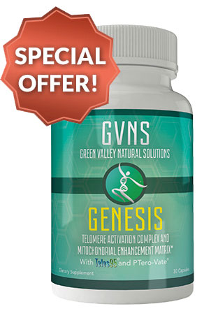

Dear Friend,
Goldie Hawn looked gorgeous as ever, sprawled across the elegant couch, her eyes glued to the center of the room.
To her left... Sergey Brin... the billionaire founder of Google also sat spellbound.
Across the lavish living room, pop star Moby perched himself against the wall, taking careful notes.
Next to him Dr. Joon Yun - one of the richest and most controversial medical doctors alive - could hardly contain his excitement.
World-famous celebrities... Fortune 500 CEOs... Silicon Valley technology whizzes... the top scientists in the world...
All packed into the luxurious living room of a Los Angeles mansion...
The exclusive guests of one Hollywood’s most powerful men.
By all accounts, it was a historic event.
Unfortunately, it was also a private, invite-only affair... with a million-dollar price tag.
Because at the center of the room, a Nobel Prize winning scientist spoke freely, revealing the jaw-dropping details of her latest discovery...
The single most important cause of human aging...
and a safe, clinically-validated way to
PERMANENTLY ALTER THE AGING PROCESS
It’s true.
Information I recently obtained from a confidential source in Hollywood confirms it.
After a legendary career...
Spanning nearly 50 years of innovation...
This world-famous scientist was invited to this closed-door meeting to reveal her greatest discovery yet.
The true root cause of human aging...
And a safe, painless way anyone can reverse the process.
Groundbreaking research proves it too.
Astonished researchers from the University of Minnesota, the University of Utah, and the Nobel Prize Committee have now validated her secret.
The top doctor at the Harvard Medical School is on record saying this breakthrough is capable of a “remarkable reversal of many of the signs and symptoms of aging”
And even Dr. Dean Ornish...
...best-selling author, medical advisor to multiple Presidents, and the chairman of a a secretive Silicon Valley health initiative called GHAC...
...gave this miracle his official stamp of approval.
Now, many of the rich and famous - including the power players in the room that day - are paying extreme sums of money to look and feel better than ever by tapping into this technological fountain of youth.
In fact...
Several of these “privileged few” slipped up in recent interviews and hinted they stay young because of the incredible science you’re about to discover
- Christie Brinkley recently made a confession in Forbes magazine that suggests this breakthrough is the cornerstone of the anti-aging strategy that landed her in the Sports Illustrated Swimsuit Edition at age 63.
- Late last year, Jeff Bezos - the CEO of Amazon who recently became the richest man in the world - admitted he planned to spend a few million dollars on this breakthrough. Within months, his transformation from middle-aged, skinny geek to strapping stud was so profound it went viral on Twitter.
- And a recent publication suggested this is the reason Will Smith and Halle Berry look almost exactly the same today (around age 50) as they did in their 20s.
The great news is...
You can now use this age-defying formula, too...
without the million-dollar price tag
Because although there wasn’t a single “regular” person invited to this off-limits meeting...
...and although I’m sure the elites in the room that day prefer to keep the power of this secret to themselves...
Today, I’m going to show regular Americans like you a new way to use this anti-aging miracle to get similar results...
...at a price anyone can afford.
Yet, just like the elite, with this secret, you too can enjoy what’s it like to move, look, and feel like you’re at least a decade younger than you really are.
Imagine it: A research-proven way to harness the power of this secret super-science of the rich to...
- Erase 10 years of wrinkles and age spots from your face...
- Supercharge your physical stamina and energy levels from morning to night...
- Wipe aches and weakness from your hands, your back, your knees, and your shoulders...
- Make your brain work smarter and faster, like you’re in your 20s again...
- And help you live to 100, without illness, free from the pain and discomfort that destroy the Golden Years of so many.
It’s that powerful and it’s all because of this incredible youth-enhancing formula...
A “peptide” molecule capable of slipping inside
every cell in your body...
...and genetically reprogramming each of them
back to a younger age
It’s unlike anything I’ve ever seen.
I’ll show it to you in a minute.
What’s more, a year-long human trial recently published in September 2018 suggests stunning evidence that …
Any person with access to this secret can expect to feel up to 27 years younger...
It’s all thanks to this incredible molecule, which now promises to redefine the way we look and feel.
In fact, a small group of regular Americans recently experienced its youth-enhancing powers for the first time.
Their results were astonishing...
For example, take Nancy R. from San Clemente, CA, who said this:
“I have good results...
I'm 63 and recovering from cancer surgery. I am running again and just danced the Samba for several hours in a parade, so I guess I'm doing well.”
And Meredith C. from Athens, GA...
“My hair is growing faster and looking really healthy, less breakage than it had been before...
Same thing for my fingernails. My skin is also looking better and feeling so much softer.”
 Or Tom W. from Portland, OR, who bragged...
Or Tom W. from Portland, OR, who bragged...
“So far so good, over 70 and still keeping up with the younger crowd!”
This is just a glimpse of the results you can enjoy once you discover how to reset the age of your cells from the inside.
Permanent results... even if you’re already in your 50s, 60s, 70s, or beyond and haven’t taken the best care of yourself.
And even if you have rotten genes and everyone in your family got old before their time.
If you’d like to join these lucky folks and try the bold, NEW way to grow older, don’t set this aside.
Turn off your cell phone, sit down, and enjoy the story below.
You probably think you know all there is about getting older.
Seeing this peptide molecule in action will change your mind.
Let’s get started by going back to the powerful people in the room that evening and the unbelievable anti-aging technology they received.
A night so extraordinary...
Every person invited to the closed-door, private meeting agreed... this night would go down in history
You see: the woman speaking at the center of that room was Dr. Elizabeth Blackburn.
And in the world of anti-aging science, Dr. Blackburn is widely considered one of the field’s leading medical minds.
A geneticist by training, Blackburn was educated at two of the world’s greatest institutions: a graduate of both Yale University and the University of Cambridge in England.
After finishing school, the young doctor wasted no time forging her legacy, making a groundbreaking discovery that would eventually earn her The Nobel Prize.
She had been out of school for less than one year, and was 27 years old at the time.
This discovery - how our DNA unravels as we age - would form the foundation of four more decades of research...
Earning her an astonishing 11 honorary degrees from universities worldwide...
Prompting President George W. Bush to personally ask her to serve as his special advisor...
And scoring her a spot on TIME Magazine’s list of the 100 most influential people on Earth.
Now this is all well documented. What isn’t well known is this...
In 1978, Dr. Blackburn left Yale... and moved to the Silicon Valley area, where she has lived ever since...
...shoulder-to-shoulder with many of the richest, most powerful people in the country.
So it should come as no surprise she found herself in that room that night, speaking to that elite group...
Spilling fresh details on her greatest breakthrough of all...
How to reset the age of your body
using this incredible peptide molecule
When it comes to looking and feeling great again, the molecule Dr. Blackburn revealed that evening...
...which you’re about to see first-hand...
...is the “holy grail.”
It flies smack in the face of everything we’ve ever heard about growing old.
The key to aging well isn’t your heart, your brain, or your immune system.
It’s not collagen... stem cells... or anything like that.
It’s not your hormones.
(And it’s definitely not the dangerous drugs Big Pharma pushes on us.)
It’s this incredible molecule. And when you have it, all those other things return to a youthful state as well.
Imagine it...
- Joints and muscles that feel great... and perform even better.
- So much stamina it’s easy to run laps around your grandkids... and circles around your younger coworkers.
- Skin and hair so smooth, soft, and healthy you often get mistaken as 10 years younger than you actually are.
- Eyes like hawk.
- A sharper mind... a trimmer body... a brighter mood.
And so much more.
That’s not all.
This discovery is also linked to reduced risk of Alzheimer’s, cancer, diabetes, heart disease – and to a longer total lifespan.
Which is probably why the richest people in America are now clamoring to “grow younger” with these cutting edge methods...
- Peter Thiel - the founder of PayPal - spent millions backing cellular anti-aging and now declares he plans on living to be 120 years old.
- Norman Lear - the legendary TV producer behind shows such as the All in the Family and The Jeffersons - personally invited Dr. Blackburn to his home to learn her secrets. At age 95, Lear is determined to continue producing blockbuster shows for years to come.
- One mega-rich CEO traveled to South America to undergo a controversial and illegal treatment to harness the power of Blackburn’s amazing molecule. By some accounts, she reversed 20 years of aging with one treatment.
Point blank: this molecule is the future.
Wait until you see the amazing way it works.
It makes its way inside your cells... connects itself
to your DNA... and then rewinds your genes to the condition they were in when you were young
It’s like hitting the pause button on the aging of your body... from the inside out.
In fact, research just out of the University of Alabama shows once this unbelievable molecule enters a cell, that cell becomes immortal.
As lead researcher Dr. T. Tollefsbol boasted... “We can make cells live forever.”
What’s most amazing is how safe, simple, and inexpensive it is.
And how fast it goes to work to bring you more energy, better joints, a smarter brain and more.
Once reserved for the rich and powerful...
starting today... it could be yours
I’ll share the entire solution with you in a moment.
Including a special way you can put this youth-enhancing secret to work inside your cells right away.
Don’t expect to hear about it from your doctor or on TV.
Your doctor is buried under too much Obamacare insurance paperwork to stay on the cusp...
The Hollywood celebrities and Silicon Valley tech moguls who discovered this secret first practically swore an oath to keep it a secret.
And you certainly won’t hear about it from mainstream sources.
You and I both know Big Pharma controls the media and would never allow a story to see the light of day if it could help you feel so good and happy you never need one of their drugs again.
Only someone committed to finding an easy, practical way to defy aging would ruffle the feathers of the world’s most powerful people to find their secrets
That someone is me.
My name is Lee Euler. I’m the Founder of an anti-aging organization dedicated to finding the latest and most effective secrets of life extension...
Although it’s now my life’s mission, to be honest, I never set out to make a career out of this.
It was forced upon me.
You see: I was raised by my single mother. My father died when I was young, so for most of my childhood, she was the only parent I had.
She sacrificed a lot so I could grow up safe, healthy, and cared for.
And it allowed me to go to college, and then on to a highly successful publishing career in New York City.
With my career soaring, I began dreaming about spending more time with her again.
Watching her play with her grandchilden.
Enjoying the holidays with the rest of the family in the home where I grew up.
Spending long weekends together with my Mom, two avid readers talking about the books we’d read.
It wasn’t long before the universe punched me straight to the gut.
Slowly, Mom started to fade...
Like many older Americans, with each year her mind and her body failed her, and her quality of life went to the pits.
Unable to care for herself.
Dependent on others for small and mundane daily tasks.
Mentally and physically, she faded. A shadow of her former self.
All the money I had... everything I worked for...
It all seemed so hollow when I realized I was losing her and there was nothing I could do. That we’d never share the good life she’d worked hard to give me - and that I now had.
Every doctor told us the same story.
This is the way it is when you get old. There’s nothing else to do.
The truth was hard to swallow:
The Medical Establishment has added
years to our lives... yet for most...
those extra years are lived in agony
Is that a life worth living?
I watched my mom die like that. A victim of her own longevity. And as much as I wanted to remember the strong, capable woman who raised me...
...for the longest time, all I actually remembered was the elderly, unhappy woman she became.
I thought I’d never heal from that wound.
Then... once I finished mourning... I had an epiphany.
I could heal my wounds... by helping others avoid the same fate.
So I took my money and spearheaded an anti-aging research complex. It became my personal mission to help all Americans enjoy their Golden Years free from pain, fatigue, and disease.
To restore their quality of life and add years to their lives.
Which is why I prepared this presentation for you... and why today only, I’m showing you exactly how you can get the greatest age-defying secret I’ve ever discovered... legally, ethically, and without breaking the bank.
To do that, I’d like to ask you to think back a few years...
Do you remember hearing about
the “discovery of telomeres”?
In 2009 it was all over the news. The discovery of something called a “telomere.”
To put it simply: inside your cells, you have these so-called telomeres.
Each one is like a chain, made up of about 8,000 links.
As you age, the chain loses links and gets shorter.
When that happens you start looking and feeling older.
Studies show this process of telomere shrinkage is closely linked to nearly every common age-related disease... even cancer, Alzheimer’s, and heart disease...
There’s no doubt about it now. Stopping your telomeres from getting shorter goes hand-in-hand with enjoying a life of health, happiness, and longevity. A fact now recognized by the Nobel Committee and our own National Institutes of Health.
As the renowned Dr. Blackburn herself recently said...
"We’ve found that the better your telomeres are protected, the less your chance of getting any of the big diseases."
Meanwhile, a recent study at the University of Utah found long telomeres are directly linked to living a long life...
While people whose telomeres get significantly shorter are TWICE as likely to die!
Researchers at Northwestern University have now confirmed people who get cancer have telomeres about 15 years “older and shorter” than those of healthy people...
And the telomeres of people with dementia are about 10 years “older and shorter.”
Yet here’s the problem
(and the really exciting part too)
Despite the hype in 2009, the problem with the discovery of telomeres was it didn’t give us a way to actually halt the effects of aging.
Yes, we learned that the most likely people to live to 90 or beyond... in good shape, getting around, and enjoying life...
...are the ones whose telomeres didn’t get significantly shorter.
But we still didn’t know how to stop it from happening (or better yet, how to make them long again).
That’s the exciting part.
Because Dr. Blackburn has now cracked the code... an incredible way to regrow human telomeres and literally rewind your body’s age at the cellular level.
Her solution is an elusive molecule
called the “TRT Peptide”
Best-selling author Dr. Joseph Mercola proclaimed it stands to revolutionize the way people grow old, calling it...
The most exciting and viable possibility for extreme life extension... The kind of anti-aging strategy that can actually allow you to regenerate and in effect “grow younger.”
You see: the first thing the TRT molecule does inside your body is to make its way into each of your cells.
It then attaches itself to your DNA, where it can access your genetic code.
What happens next is absolutely incredible.
Do you remember how I said each of your telomeres is like a chain? And the more links you have in the chain, the “younger” you look and feel?
Well, check this out...
After accessing your genetic code, the TRT Peptide then reprograms it back to the condition it was in when you were young.
The cell then responds by adding those chain-like links back to your telomeres.
And then, picture this: with longer telomeres from head to toe, your entire body begins to reverse in age, back to its younger self... like you stepped into a time machine.
Even more incredible: the TRT Peptide isn’t some foreign substance like a drug or a steroid. It’s safe and natural. In fact...
Your body produces it naturally...
and you now have a safe way to turn it back on
You see: the reason we start to feel old is because our bodies shut off the production of this molecule as we get older.
No one knows why this happens.
The great news is we don’t need to.
Because we’ve uncovered a way to turn it back on, and the results are astonishing.
The TRT Peptide is so unimaginably powerful I’m not talking about slowing down or even freezing the aging process...
But reversing it.
Research shows that, on the average, people are seeing the anti-aging, telomere-extending equivalent of eight and a half extra years…for some folks as much as 20, 23, even 27 years!
This is brand new research, published in September 2018. One of the very first human clinical trials of its kind.
It’s so new, in fact, that we’re still trying to wrap our minds around the implications.
Just to be clear – I’m not talking about drawing out the “end of life” death-spiral of aging, sickness, and disease over an additional 20 years.
Who wants that?
This study proves possible adding another two decades of healthy, vibrant independent living may be within reach of the “average Joe” like you and me!
A bold claim, I know. But this research isn't coming out of left field...
Because when I first began my research into life extension in 2015, I came across a breathtaking study conducted by world-renowned Harvard researcher Dr. Ronald DePinho.
Working with a group of lab mice, Dr. DePinho engineered a way to completely turn off the TRT Peptide.
Unsurprisingly, the mice got very old, very fast.
Their fur turned grey.
Their brains got smaller and slower.
They lost their sense of smell.
Their digestion became poor.
Exactly what happens to humans as they get older and lose their TRT Peptide.
Then... Dr. DePinho reactivated the TRT Peptide inside each of these mice.
What happened next sent shockwaves through the medical community.
They aged “backwards”.
All signs of old age... vanished.
Their thinning, grey fur was revived... dark, full, and lustrous.
Their shriveling, slow brains got smarter and faster.
Once their TRT Peptide was turned back on,
they grew so young they returned to
their physical primes...
They even started mating and building families again.
In side-by-side comparisons, these mice were completely indistinguishable from young mice.
Had they been humans, they would have been labeled as “elderly” and “senile.”
Yet with their natural production of TRT Peptide turned back on, they went back in time...
...and stayed there.
Maybe you’re thinking… “I’m not a lab rat.”
Of course not.
And everybody knows results in the lab aren’t the same thing as real world results.
That’s why the recent human study I mentioned above is such a game-changer (more on that in a minute)…
First, let me share with you what real people in the real world have experienced with TRT Peptide...
This is the first thing you’ll probably notice when you reactivate your natural production of the TRT Peptide... and begin repairing your telomeres for the first time in decades...
Practically everyone over the age of 50 describes the rejuvenation they experience the same way: “I feel better overall.”
It sounds vague...
Yet if you’re getting older, you know EXACTLY what they mean.
It’s that top-to-bottom, all-over feeling of being in your prime again... and not headed downhill fast.
Of being healthy from head to toe, inside and out.
Of having a body that works wonderfully... instead of struggling to “get by.”
Just take a look at how people react after first regrowing their telomeres....
Allison from Spokane, WA...
“I noticed a steady increase in stamina and endurance; notice I did not say a "rush" of unbounded energy. I noticed less aches and pains and injuries healed faster, skin improved in elasticity, sleep and dreaming improved greatly...”
 Michael from Newark, NJ...
Michael from Newark, NJ...
“I sleep well and feel so good. I have lots of stamina and can play basketball again with people 20 years younger.”
Jennifer from Fairfax, VA...
“...have already had many unexpected benefits, including having all of my joint pains vanish, as well as all chronic, age-related health problems.”
Beth from Sedona AZ...
“...have noted many improvements to my overall health, and energy level.”
Doug from Baltimore, MD
“I am happy with the results. better stamina, concentration and overall wellbeing.”
Imagine it!
Your joints and muscles won’t ache so much.
It’ll be easier to get out of bed in the morning.
You’ll have the stamina and energy to cruise through the day... as if you’re connected to a battery.
You’ll simply feel better, all over.
That alone makes most people believers for life... yet that’s just the first benefit people feel!
You won’t believe what comes next. I’ll share the reports in a moment.
They’re hard to believe.
The bottom line is simply this...
If you want to recapture the youth, energy, and vitality you had when you were younger...
You need more TRT Peptide inside your body, and today, with the lab-tested formula I’m about to share with you...
There’s now a safe and practical
way for you to do it... without risking a penny
You see: after I discovered the unbelievable powers of the TRT Peptide and the irrefutable science backing its effectiveness...
I learned the only people with access to this youth-enhancing discovery have been elite athletes and the mega-millionaires of Hollywood and Silicon Valley.
I couldn’t accept that. So I set out to discover a way to bring this science to as many people as possible...
Not just the privileged few who have the money and connections to get it.
It became the #1 focus of my team of anti-aging researchers.
After analyzing the research on thousands of potential compounds...
We identified about 40 that are proven to reactivate your body’s production of the TRT Peptide.
We could have easily gone to market with any of those. They’re quite powerful.
I felt that wasn’t good enough.
It would be a disservice to our customers to provide anything less than the most powerful formula possible.
Because – as you may know – sometimes a specific combination of nutrients can be exceptionally more powerful than the individual nutrients are on their own...
Scientists call it creating synergy.
And today, I’m pleased to say, it’s here.
Introducing...
Genesis
If you want to win the fight against the march of time... this is the day you’ve been waiting for.
The most advanced age-defying formula ever created.
The first anti-aging capsule designed to make you young again by reactivating your body’s sleeping TRT Peptides...
...with an incredibly effective proprietary formulation of potent, trademarked, and patented next-generation nutrients proven to repair and regrow your telomeres.
You read that right: trademarked and patented nutrients.
With absolutely no fillers, no soy, no artificial colors, and fully compliant with GMP safety standards...
It makes no difference if you’re in your 30s, your 80s, or anywhere in between...
If you’re in great shape, okay shape, or awful shape...
If your genes are terrific or terrible...
If you’re reading this, the ability to generate the TRT Peptide is sleeping inside your body right now... and all you have to do to feel young again is wake it up.
Which means Genesis will work for you.
If you’re wondering just how powerful and effective Genesis can be, consider this...
I already told you about the instant rejuvenation you can expect in overall health, energy, and well-being...
That’s only the start.
Because by the end of the first week...
Many rave about better mental focus...
Getting more things done at work and around the house...
Dramatic improvements in joint pain and mobility...
And a noticeable increase in physical abilities.
It’s true. If you’ve given up on your favorite physical activities...
...running...
...hiking...
...dancing...
...working out...
...prepare to get back out there.
You’ll be astonished how insanely good you feel.
That’s just the tip of the iceberg.
Because you’ll also be bulletproofing your body and your mind against the nasty age-related diseases that ruin the retirements of so many...
And let me tell you: life becomes incredibly fun again when you finally LET GO of worrying over what horrible disease or ailment life has in store for you...
Can you feel it?
You’ll feel free again... completely safe, as if in a fortress.
Best of all: it’s as easy as 1... 2... 3...
Just one, easy-to-swallow capsule each day.
Imagine it. One tiny pill each morning - and you’ve hit the pause button on your age for the rest of the day.
While everyone else gets older, you’ll be one of the lucky few enjoying what it feels like to be young again.
The secret - of course - is
our synergistic formula
You simply cannot get this unique combination of age-reversing compounds anywhere else.
Before I tell you all about it, I want you to know I wouldn’t dream of putting something on the market I don’t personally use myself.
That’s right. I take Genesis every day. And I feel better today - at age 65 - than I did in my 20s.
For most of my life, I struggled with chronic pain, excruciating migraines and digestive issues.
Now they’ve vanished.
For the first time, I’m looking forward to living to at least 90... and maybe even 100 years old. And I mean good years. Years with friends and loved ones... traveling, pursuing my hobbies, writing and publishing more books.
If you’d like to join me, let me share this revolutionary formula, and the backbone it’s built upon...
TRT Enhancing Supernutrient #1:
Telos95
Remember that human trial I hinted at just a few minutes ago?
This supernutrient, Telos95, is so powerful , a one-year, randomized human study, conducted by Princeton Consumer Research in 2018, PROVED that subjects taking the key supernutrient in Genesis reversed their biological age by as much as 27 years.
Their telomere length grew on average the equivalent of eight and a half years…YOUNGER.
After taking this amazing nutrient for just six months, some of the subjects’ telomeres aged in reverse by as much as 20, 23 and 27 years!
Imagine, six months from now, looking and feeling as much as 27 years younger than your actual age.
The first glimmer of hope for Telos95 came from a study at Europe’s renowned Life Length Laboratories...
The results were out of this world. Here’s what happened:
At the beginning of the study, the researchers created two test groups.
One that received Telos95...
One that didn’t.
Amazingly, at the end of the study... when the two groups were compared to one another...
The telomeres of the group that got Telos95
were 20% longer than the telomeres of the group that got nothing
This was a staggering result.
Taken together, the results of these two studies have shaken the research community to the core.
By some estimates…
That’s like rewinding your age by up to 27 years... and then keeping it there... FOR GOOD!
It sounds impossible, but with Telos95, it’s fact.
Of course, these results happened under strict lab conditions, so I can’t promise you’ll get a transformation this profound...
Yet imagine what your life will be like if your results were even half this good.
How much better you’d feel...
How much healthier you’d be...
How much more quality of life you’d have...
Then tell me:
What would you give to look and feel that young again... and to stay that way permanently...
for the rest of your life?
Quite a lot, I’m sure. And believe me: it’d be worth every penny.
Yet, how does paying ZERO sound?
Keep reading and I’ll show you how - on this page only - you can get a two-month supply of Genesis, without paying today and with no risk or obligation whatsoever.
First, let me tell you a little bit more about what you can expect when you reactivate your body’s natural production of the TRT Peptide and regrow your telomeres with Genesis.
I already told you about the fast-acting benefits you’ll first experience with Genesis...
- Energy to get through the longest of days, without the afternoon crash
- Durable, healthy joints so smooth, you’ll swear they’re brand new
- The physical stamina to do the activities you love again, without paying for it the next day
- A razor-sharp mind that helps you get more done each day, so effortless, it’s like you’re on autopilot
- And because of these things, people will treat you differently again, like they did when you were young and strong
You may even find you’re getting deeper, more restful sleep and consistently enjoying a better mood and better sense of well-being.
Of course, there’s evidence the Genesis formula helps people who suffer from poor sleep, but I think it goes deeper than that...
My guess is people who take Genesis rest easy because they don’t worry about getting sick or handicapped any longer.
And when the weight of all that worry gets lifted from their shoulders, they can sleep peacefully for the first time in years.
I also wouldn’t be surprised if you trimmed up around your waist because your metabolism speeds up, and you’re more active each day.
Yet there’s so much more.
Now that thousands of our early customers have been taking Genesis for months, we’ve got a good idea of the long-term benefits too
And they’re spectacular.
Because after a month or two, most people are thrilled how repairing their cells from the inside makes them look fantastic on the outside.
You’ll know it when it happens because...
Your skin comes to life again
You probably remember it well. Healthy, vitalized skin that felt good and looked great.
Get ready, because those days are back.
If your skin is wrinkled, dehydrated, and rough...
Especially on your face, neck, and hands...
And no amount of cream or lotion has brought it back to life...
The “Total Cellular Transformation” you get with Genesis could be the solution you’ve been looking for.
Stick with Genesis for the long-term...
And I guarantee you’ll notice the difference. You’ll look brighter, fresher, and younger... and friends and neighbors may even pull you aside to ask what you’re doing different.
The research proves it.
Longer telomeres don’t just safeguard your body against the age-related sickness...
They don’t just give you more energy and mental clarity, and make your joints and muscles strong and capable again...
They don’t just increase your chances of living into your 80s, 90s, or beyond in full health...
When you have long telomeres, you look younger too!
A recent study published by the British Medical Journal confirms the longer your telomeres, the younger people judge you to be
This effect is so powerful, it applies to identical twins.
You see: when study participants were asked to compare identical twins, the twin with the longer telomeres was judged to be significantly younger...
With fewer fine lines and wrinkles and a much healthier complexion.
Since identical twins have the exact same genes, the bottom line is simply this:
People with long telomeres look significantly younger than people with short telomeres...
...no matter what kind of genes they have.
If you remember, that’s because the way the TRT Peptide works is by latching itself to your DNA and reprogramming your genes to a younger state.
And only Genesis was specifically designed to do it.
Incredible right?
Yet my team set out to create a SYNERGISTIC formula. Unrivaled and unmatched in its power to regrow your telomeres.
So let me tell you more about what’s inside...
TRT Enhancing Supernutrient #2:
Cycloastragenol
It may look like tree bark but it’s actually a powerful supernutrient extracted from the roots of an odd Chinese plant called the Astragalus flower.
And a groundbreaking paper published in the journal Rejuvenation Research revealed that despite its strange appearance, this next-generation supernutrient could be one of the most important anti-aging breakthroughs in recent memory.
You see: in this double-blind, placebo-controlled study, the researchers took two groups of people between the ages of 53 and 87.
One group got nothing, a placebo.
The other group got cycloastragenol.
Remember how I said your telomeres are like a chain?
Well, it’s a well-established fact that AGING is the process of the chain being reduced from 8,000 links to about 5,000 links.
That’s it. Just 3,000 links separate a healthy and fit 20-year-old from an old and senile 90-year-old.
Well, one year later, the researchers measured each group’s telomeres.
As expected, in this study, the placebo group got older, weaker, and slower.
Their telomeres lost about 290 links on average.
That’s almost 10% of their life’s supply, gone in a year.
On the other hand, the cycloastragenol group actually gained an average of 530 links per person.
Can you believe it?
Further studies indicate it happens because cycloastragenol increases your body’s natural production of TRT Peptide by 200% or more
We were so blown away by what we saw, several of my researchers suggested we create a formula that consisted of just this and nothing else.
Yet when we evaluated the potential of combining cycloastragenol with Telos95, we knew we were onto something. A potent 1-2 punch that increases your body’s production of the TRT Peptide in two different ways.
It’s really getting good now, isn’t it? Let’s keep going...
TRT Enhancing Supernutrient #3:
Alpha Lipoic Acid
A lot of people call it ALA. Maybe you’ve heard of it before. For good reason too. It’s one of the most powerful nutrients you can put in your body.
- It helps support healthy blood pressure and cholesterol
- It protects your brain from age-related decline
- It’s a powerful antioxidant and can dramatically reduce inflammation
- It helps support healthy blood sugar levels
- It even helps your eyes, ears, and bones stay strong as you get older
And only Genesis has a synergistic formula that combines ALA with Telos95 and cycloastragenol...
Here’s why that’s really exciting:
Doctors at the Emory School of Medicine recently concluded ALA specifically targets and lengthens the telomeres in your heart!
So while your peers are huffing-and-puffing and worrying themselves sick because their hearts can’t keep up...
You’ll rest easy knowing your heart is actually getting younger and more powerful each day thanks to Genesis.
That’s one... two... three different mechanisms Genesis uses to regrow your telomeres.
There’s still one more...
TRT Enhancing Supernutrient #4:
Vitamin D3/K2
Even mainstream doctors have wised up to why you should take Vitamin D3.
What your doctor almost certainly didn’t tell you is Vitamin D3 could harden your arteries...
Unless you combine it with Vitamin K2.
Genesis takes care of that. Yet infusing our formula with this potent double-shot of vitamins goes beyond the benefits of taking them alone.
Because we now have evidence that adding Vitamin D3/K2 to Genesis further enhances the telomere-lengthening powers of our formula.
In fact, in two different studies conducted at Harvard and the London School of Medicine...
More than 4,400 people were tested...
And this potent vitamin combo was directly responsible for adding a minimum of five years back to their telomeres.
And the exact clinical dose is found inside every Genesis capsule.
If you act while the quantities I’ve set aside for this special promotion last, you can get a TWO month supply, and pay LATER only if it works for you.
That way, you can join the Genesis “early adopters” who are building a brand new kind of lifestyle...
A bold, new way to live their lives...
A no-holds-barred adventure
through life... at any age
That’s the power of the TRT Peptide.
Because when your telomeres are getting longer and you’re growing young again, the old rules no longer apply to you.
While your peers are scared stiff about the future, hoping to “dodge the bullet” for another year...
You’ll look at your life...
And see endless opportunity.
Which is probably why New Scientist magazine recently hailed this breakthrough as...
While Yahoo! Beauty asked...
And why even Oprah called the ability to finally regrow your telomeres...
Don’t let this opportunity pass you by.
The time is now.
What was once the secret treatment of elite Soviet athletes, Hollywood stars, and the richest businessmen in the world is now being enjoyed by an increasing number of regular Americans.
Wouldn’t you like to be one of them?
With Genesis you can...
And today only, I’m giving it away to 500 people, and taking away all the risk by letting them pay for it LATER, and only if they’re absolutely thrilled with their results.
For the next 24 hours only, I’ve reserved a two-month supply of Genesis in your name
With your permission, I’d like to send this risk-free supply to you now.
Because as you can imagine, I can’t keep a deal like this around for long...
So this special offer is only available today... right here, right now... to the next 500 customers who respond.
Are you ready to get started? Great. Here’s what happens next...
When you click the button below, you’ll immediately claim your two bottles of Genesis from our limited promotional supply...
All I ask you pay today is $9.95 to help me offset the cost of shipping, and your two bottles will be rushed to your door immediately.
After giving Genesis a free-trial... you can choose to pay for it later... and ONLY if you’re 100% satisfied
To be clear: aside from shipping, you pay NOTHING today. Your two bottles of Genesis are yours, with my compliments.
Then... if over the next 30 days, you’re not absolutely thrilled with how you look... think... move... and feel with Genesis...
Just place an easy call or email our friendly customer-service team...
And you won’t be charged a single penny.
No hassle. No hoops. No fine print.
There’s no obligation.
You simply cover the small shipping and handling today, and two bottles of Genesis are yours to try without paying.
You only pay later, and only if you’re convinced it works for you.
There’s no catch. That’s how confident I am your results will be so remarkable, you won’t hesitate to become a paying customer.
Does that sound like a square deal to you?
Great, but I don’t want you to say “YES” just yet...
Because we’ve added a revolutionary new compound that enhances and compliments your new longer telomeres and puts Genesis in a league of its own
Would you believe me if I told you we discovered a way to make Genesis EVEN more potent by adding a second, game-changing development?
You see: inside each of your cells you have tiny structures called “mitochondria.”
They’re like little batteries that provide energy inside the cell.
Unfortunately, like all batteries, over time your mitochondria wear out.
And you guessed it...
According to a new study from researchers at the University of Massachusetts, there’s a DIRECT LINK between your mitochondria and the length of your telomeres...
And when you strengthen the link between your mitochondria and your telomeres...
You create a cellular alliance that works in tandem to prevent aging inside your cells.
How do you create this alliance?
Easy...
With a special trademarked form of a supernutrient
named Ptero-Vate
It’s pronounced “TERO Vate” because the “P” is silent. It's a special form of nutrient called pterostilbene, related to resveratrol but vastly more powerful.
It’s now inside every capsule of Genesis.
Pterostilbene (pronounced tero-STILL-bean) is found in blueberries, grapes, almonds and a few other foods.
But you’d be shocked down to your shoes if you knew the amount of these foods you have to eat to get the dose of pterostilbene known to add years to life.
Are you ready? Here goes: You’d have to eat over 500 cartons of blueberries to ingest enough pterostilbene to experience its full powers.
And although it’s hard to get, you want that clinical dose. . .
Because pterostilbene is so potent, research conducted at the Buck Institute of Aging suggests it could make living past 100 – in tremendous health – a perfectly realistic goal for anyone who takes it.
And Genesis gives you the full clinical dose.
How can you lose? The answer is simple: You can’t. The ingredients in the Genesis formula are safe, natural and harmless. And you can get your money back – in full – any time within 90 days if it doesn’t work for you.
Are you ready to claim your
free trial of Genesis now?
At the bottom of this page, there’s a button.
When you click it, you’ll be taken to our order form, where you can claim your trial bottles of Genesis.
It takes less than two minutes, and your information will be 100% secure.
When you finish, your bottles of Genesis will be shipped straight to your door.
Unlike many of our competitors who skimp on costs by getting their products made in places like China or Bangladesh...
Genesis is manufactured in America and guaranteed for the highest levels of purity, potency, and safety
We don’t cut corners, especially with your health.
Every bottle of Genesis is produced here in the USA and shipped directly to you from our state-of-the-art facilities in Virginia.
In fact, our entire supply of Genesis is kept in secure, temperature-controlled storage facility...
Right next to my personal office where I’m writing this letter to you right now.
It’s safe... it’s effective... and you have
absolutely no risk whatsoever
That’s about as good as it gets, wouldn’t you say?
If you agree, I encourage you to act now.
Genesis isn’t sold in stores, and our Chief Financial Officer made me swear to limit this special offer to just 500 customers today.
He’s breathing down my neck, so this is a strict limit, no exceptions.
Once it’s reached, this page will be taken down.
If you’re serious about experiencing the Genesis transformation for yourself, don’t delay.
Based on the last promotion we ran like this, it’s likely 100,000 or more people will see this page today.
All eager to be one of the 500 who can transform their bodies and their minds with a risk-free trial of Genesis... without paying anything today.
The good news is this page loaded, so I still have a spot for you.
All you have to do is click the button below now.
Then... get ready.
Because in a few days, your two trial bottles of Genesis will arrive at your front door.
That’s when the fun begins.
All you’ll need is one capsule per day. In the first day or two, you’ll notice the “Total Cellular Transformation” going on inside your body...
Little by little, you’ll start to feel incredible.
Then... one morning not long from now...
You’ll skip out of bed - yes, SKIP - and it’ll hit you...
The little aches and pains...
The dense brain fog...
The feeling of wondering if you’ll have the energy to “make it” through another day...
Even some of your most visible signs of aging...
Have all vanished... as if you had some kind of magic wand.
Then... the most important moment of all.
That voice in the back of your mind...
Anxious about an uncertain future, always worrying when the other shoe will drop...
Yes... that voice will be gone too.
You’ll be FREE.
Because with Genesis you’ll KNOW your health is safe and protected.
That, my friend, is a wonderful place to be.
These are the NEW rules of growing old...
Listen: I get it.
Maybe in the past you’ve been seduced by outlandish claims that did nothing but take money from your wallet.
That’s why I’ve taken all the risk and am giving you a chance to try Genesis without paying anything today.
See and feel the transformation for yourself... or you pay nothing.
That’s a risk-free, no-brainer if you ask me.
Especially when you consider the price of doing nothing...
You worked a lifetime to get to your Golden Years.
Dreamed of a happy, vibrant, fulfilling twilight...
Walking the streets of the world’s greatest cities...
Dancing at your grandchildren’s weddings...
Tumbling around the yard with your great-grandchildren...
Enjoying a long weekend in the country with delicious food and great friends.
Do you really want to miss out because you got too old, too fast?
What a shame that would be. Especially over a measly $9.95 for shipping.
I know this is a bit of tough love... but it’s the truth as I see it. For far too many people life is a struggle to survive...
If you ask me, that’s not a life worth living. I made Genesis to change that.
It’s time. Go ahead and click the button below now.
You have no risk whatsoever. Your satisfaction is 100% guaranteed.
Absolutely nothing to lose... yet so much gain.
Looking... thinking... moving... feeling so much better. Just like you used to.
Rewinding your biological age by up to as many as 27 years...
Being one of the lucky few who ages happily, in full health.
The rules have been rewritten. This is the NEW way to grow old.
Don’t be left out.
Join us.
Click the button below now. Pay nothing today and give Genesis a try, while this special offer is still available.
*Green Valley Trial Offers are only available in Canada and U.S. Territories.
Thank you for your time,
Lee Euler
Editor and Publisher
The statements on this web page have not been evaluated by the Food and Drug Administration.
This product is not intended to diagnose, treat, cure, or prevent any disease.
PS - Still here? Great. Maybe you have a few questions.
Here are some of the most common ones our customers ask...
What kind of results can I expect from Genesis?
I like to place results possible with Genesis into three buckets.
First, you’ll feel a lot better overall. More energy, fewer aches and pains, deeper sleep, clearer thoughts, less inflammation. Think back a decade or two... that’s how you’ll feel again.
Second is looking better. A brighter, healthier looking face and skin. Combine that with moving and feeling better... and you’ll be shocked how people suddenly stop treating you like you’re “elderly.”
Finally, I’m confident taking Genesis will add years of functional, capable, high-quality time to your life. The combination of long telomeres and healthy mitochondria is, in my opinion, the secret to increasing your lifespan... while... feeling like someone half your age so you have a life worth living.
It doesn’t matter if you’re in great shape or terrible shape, if you have great genes or rotten ones... Genesis will work for you. Guaranteed.
Is it possible for something this
powerful to be safe?
What are the side effects?
Point blank: there are no side effects with Genesis. It’s all-natural and pure... and contains only ingredients backed by current science.
To ensure the highest safety and quality standards, Genesis is manufactured right here in the United States (NOT China or India, like many of the fly-by-night knock-offs trying to steal our formula).
That means you can rest assured what you’re taking is fully compliant with GMP safety standards... with no soy and no artificial colors whatsoever.
How often do I have to take Genesis?
How big is each capsule?
Genesis couldn’t be easier.
The capsules are about the size of the average daily multi-vitamin and you get the full benefits with just one capsule per day.
That’s all it takes to get a CLINICAL DOSE of each of the potent, youth-enhancing nutrients.
Be wary of anyone trying to sell you “kitchen sink” formulas that contain too little of each ingredient to have any effect (or that require you to take multiple doses each day, which is a clever way to disguise how much you’ll really be paying to see results).
Is Genesis available anywhere else?
Can I buy it at my local supplement store?
This special risk-free offer is only available to the next 500 customers to respond today, on this page only.
You also cannot find Genesis in stores.
With all the buzz, you may find a cheap knockoff at your local vitamin shop.
Yet remember, the synergistic formula you heard about today is unique to Genesis. It contains trademarked and patented compounds.
You absolutely cannot find it anywhere else and quantities are extremely limited. Don’t delay if you’d like to give it a risk-free try.
I know Genesis is backed by science, yet are you sure it will work for me? Is there a guarantee?
Yes, I am absolutely sure Genesis will work for you.
That’s why I’m letting you try Genesis without sending any money today.
When you claim your two trial bottles of Genesis today, all I ask is you cover a small $9.95 for shipping.
You then have 30 days to see and feel the transformation.
You only pay LATER, and only once you've proved to yourself it works for you.
If you don’t like it, one call or email is all it takes. You won’t be charged.
I take Genesis every day. I believe everyone over age 50 should as well.
You have absolutely no risk with this unique trial offer. It will work for you or you pay nothing. Go ahead and see for yourself.